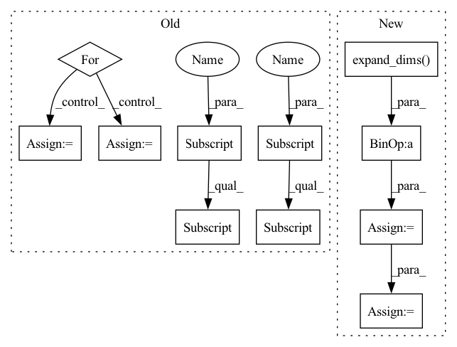

Pattern ID :34904

Before Change
// 创建一副新图，并根据每个像素点的种类赋予颜色
//------------------------------------------------//
seg_img = np.zeros((np.shape(pr)[0], np.shape(pr)[1], 3))
for c in range(self.num_classes):
seg_img[:,:,0] += ((pr[:,: ] == c )*( self.colors[c][0] )).astype("uint8")
seg_img[:,:,1] += ((pr[:,: ] == c )*( self.colors[c][1] )).astype("uint8")
seg_img[:,:,2] += ((pr[:,: ] == c )*( self.colors[c][2] )).astype("uint8")
//------------------------------------------------//
// 将新图片转换成Image的形式
After Change
image = Image.fromarray(np.uint8(seg_img))
elif self.mix_type == 2:
seg_img = (np.expand_dims(pr != 0, -1) * np.array(old_img, np.float32)).astype("uint8")
//------------------------------------------------//
// 将新图片转换成Image的形式
//------------------------------------------------//
image = Image.fromarray(np.uint8(seg_img))
return image
In pattern: SUPERPATTERN
Frequency: 3
Non-data size: 11
Instances
Fragment ID: 99990005
Project Name: bubbliiiing/pspnet-pytorch
Commit Name: 373340e315d6e9a029041ec293673c06c3c1cb7e
Time: 2022-03-04
Author: 3323290568@qq.com
File Name: pspnet.py
M Class Name: PSPNet
N Class Name: PSPNet
M Method Name: detect_image(2)
N Method Name: detect_image(2)
M Parent Class: object
N Parent Class: object
M File Name: pspnet.py
N File Name: pspnet.py
M Start Line: 155
M End Line: 172
N Start Line: 115
N End Line: 190
'>
Before Change
// 创建一副新图，并根据每个像素点的种类赋予颜色
//------------------------------------------------//
seg_img = np.zeros((np.shape(pr)[0], np.shape(pr)[1], 3))
for c in range(self.num_classes):
seg_img[:,:,0] += ((pr[:,: ] == c )*( self.colors[c][0] )).astype("uint8")
seg_img[:,:,1] += ((pr[:,: ] == c )*( self.colors[c][1] )).astype("uint8")
seg_img[:,:,2] += ((pr[:,: ] == c )*( self.colors[c][2] )).astype("uint8")
//------------------------------------------------//
// 将新图片转换成Image的形式
After Change
image = Image.fromarray(np.uint8(seg_img))
elif self.mix_type == 2:
seg_img = (np.expand_dims(pr != 0, -1) * np.array(old_img, np.float32)).astype("uint8")
//------------------------------------------------//
// 将新图片转换成Image的形式
//------------------------------------------------//
image = Image.fromarray(np.uint8(seg_img))
return image
'>
Fragment ID: 99990004
Project Name: bubbliiiing/pspnet-pytorch
Commit Name: 373340e315d6e9a029041ec293673c06c3c1cb7e
Time: 2022-03-04
Author: 3323290568@qq.com
File Name: pspnet.py
M Class Name: PSPNet
N Class Name: PSPNet
M Method Name: detect_image(2)
N Method Name: detect_image(2)
M Parent Class: object
N Parent Class: object
M File Name: pspnet.py
N File Name: pspnet.py
M Start Line: 155
M End Line: 172
N Start Line: 115
N End Line: 190
'>
Before Change
// 创建一副新图，并根据每个像素点的种类赋予颜色
//------------------------------------------------//
seg_img = np.zeros((np.shape(pr)[0], np.shape(pr)[1], 3))
for c in range(self.num_classes):
seg_img[:,:,0] += ((pr[:,: ] == c )*( self.colors[c][0] )).astype("uint8")
seg_img[:,:,1] += ((pr[:,: ] == c )*( self.colors[c][1] )).astype("uint8")
seg_img[:,:,2] += ((pr[:,: ] == c )*( self.colors[c][2] )).astype("uint8")
//------------------------------------------------//
// 将新图片转换成Image的形式
After Change
image = Image.fromarray(np.uint8(seg_img))
elif self.mix_type == 2:
seg_img = (np.expand_dims(pr != 0, -1) * np.array(old_img, np.float32)).astype("uint8")
//------------------------------------------------//
// 将新图片转换成Image的形式
//------------------------------------------------//
image = Image.fromarray(np.uint8(seg_img))
return image
'>
Fragment ID: 99990007
Project Name: bubbliiiing/hrnet-pytorch
Commit Name: e53724ea45003d8acd5d8b5465fa97038d486824
Time: 2022-03-19
Author: 3323290568@qq.com
File Name: hrnet.py
M Class Name: HRnet_Segmentation
N Class Name: HRnet_Segmentation
M Method Name: detect_image(2)
N Method Name: detect_image(2)
M Parent Class: object
N Parent Class: object
M File Name: hrnet.py
N File Name: hrnet.py
M Start Line: 153
M End Line: 170
N Start Line: 113
N End Line: 188
'>
Before Change
self.predicates["last_statement"] = self._last_statement(data)
self.predicates["previous_statement"] = self._previous_statement(data)
for class_name in self.config["words"]:
usr_index = self.config["words"][class_name]["usr"]["index"]
sys_index = self.config["words"][class_name]["sys"]["index"]
self.predicates[class_name + "_usr_index"] = self._has_word(
data, usr_index)
self.predicates[class_name + "_sys_index"] = self._has_word(
After Change
hidden = self.embed_layer(input_ids)
input_mask = tf.sign(input_ids)
logits = tf.reduce_sum(
hidden *
tf.cast(tf.expand_dims(input_mask, axis=-1), dtype=hidden.dtype),
axis=-2)
probs = tf.nn.softmax(logits)
if self.config["hard_pseudo_label"]:
predictions = tf.argmax(probs, axis=-1)
self.predicates["predictions"] = tf.one_hot(
predictions, depth=probs.shape[-1])
else:
'>
Fragment ID: 99989997
Project Name: google/uncertainty-baselines
Commit Name: c4b52ea74cd83a1d99d775ed4ff597852c3c41c4
Time: 2022-06-11
Author: yquan@google.com
File Name: experimental/language_structure/psl/psl_model_dstc_synthetic.py
M Class Name: PSLModelDSTCSynthetic
N Class Name: PSLModelDSTCSynthetic
M Method Name: generate_predicates(2)
N Method Name: generate_predicates(2)
M Parent Class: psl_model.PSLModel
N Parent Class: psl_model.PSLModel
M File Name: experimental/language_structure/psl/psl_model_dstc_synthetic.py
N File Name: experimental/language_structure/psl/psl_model_dstc_synthetic.py
M Start Line: 337
M End Line: 349
N Start Line: 129
N End Line: 144